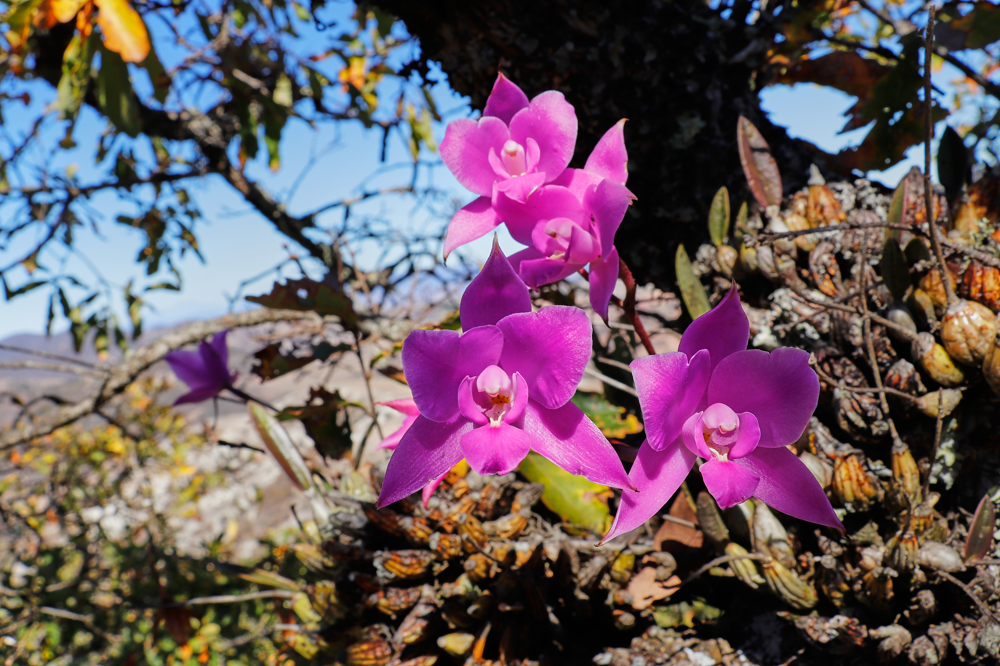
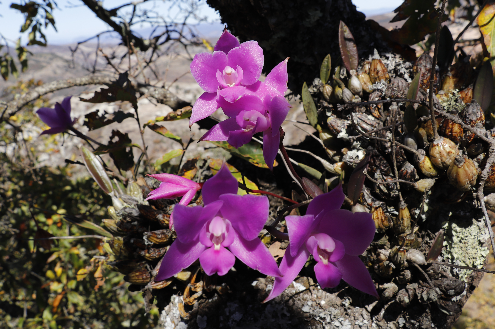
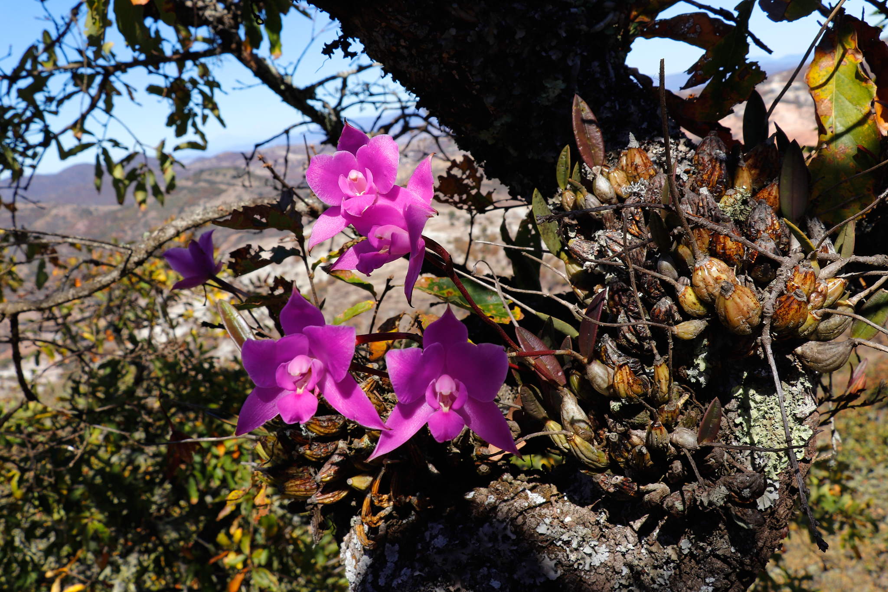
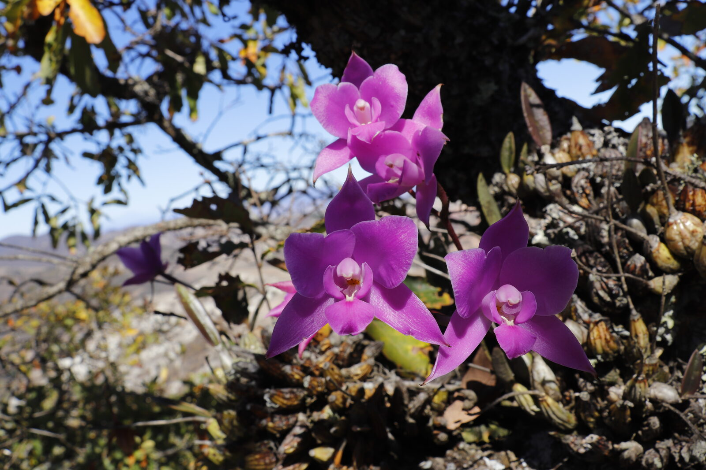

The scaly Laelia of the Oaxacan highlands — a ceremonial cousin of anceps, with its own deep cultural life.




In the Oaxacan highlands, Laelia furfuracea occupies the same ceremonial and ecological niche that L. anceps fills further north — a late-autumn bloomer, tied to Day of the Dead observances, and under steady pressure from habitat loss and harvest.
The specific epithet furfuracea (scaly, mealy) refers to the distinctive silvery scales on the pseudobulbs. Flowers are smaller and more richly coloured than L. anceps, with a deep rose-magenta lip. The species is widely cultivated both in Mexico and internationally.
Endemic to Oaxaca, the species occurs in scattered populations in pine-oak and cloud forest at mid-to-high elevation. Cliff faces, rocky outcrops and the mossy branches of old oaks are typical substrates.
In many Oaxacan communities, L. furfuracea — locally known as flor de muerto alongside marigold and L. anceps — is harvested for altar arrangements. Sustainable-use traditions exist, but are increasingly pressured by commercial demand in regional markets.